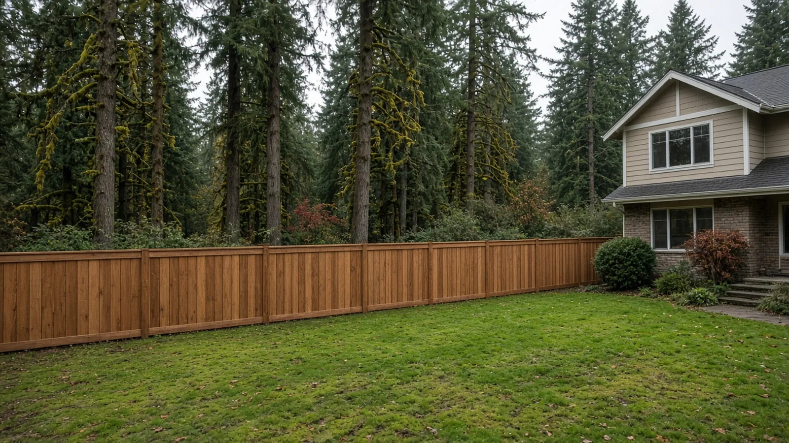
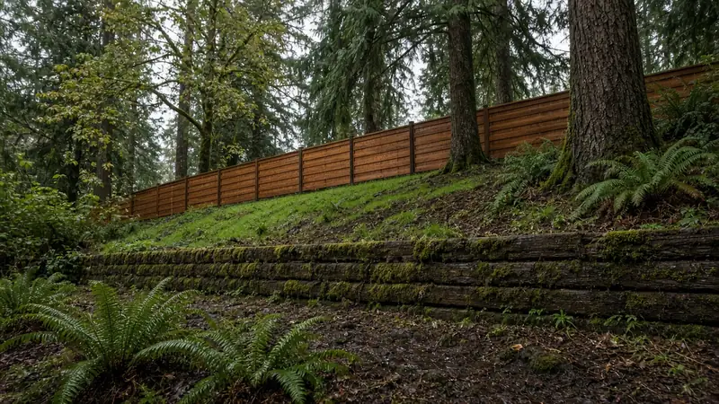
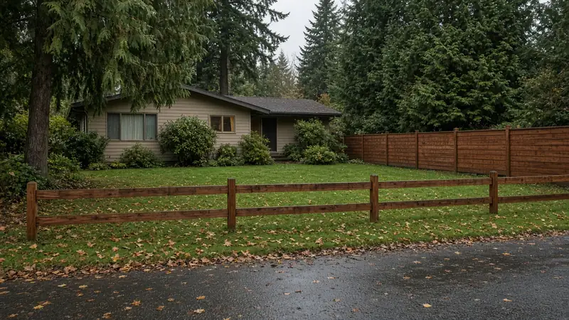
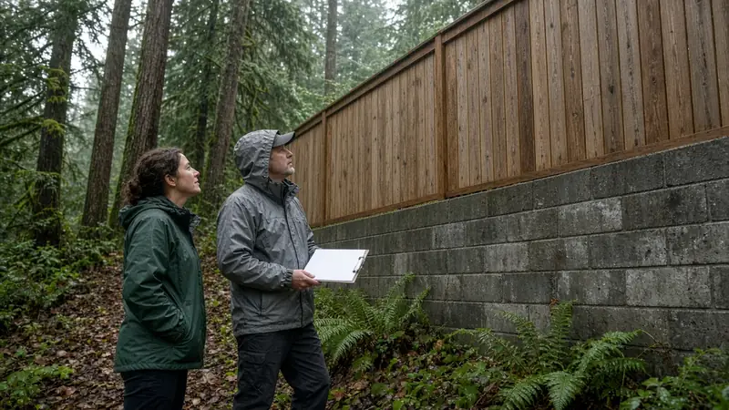
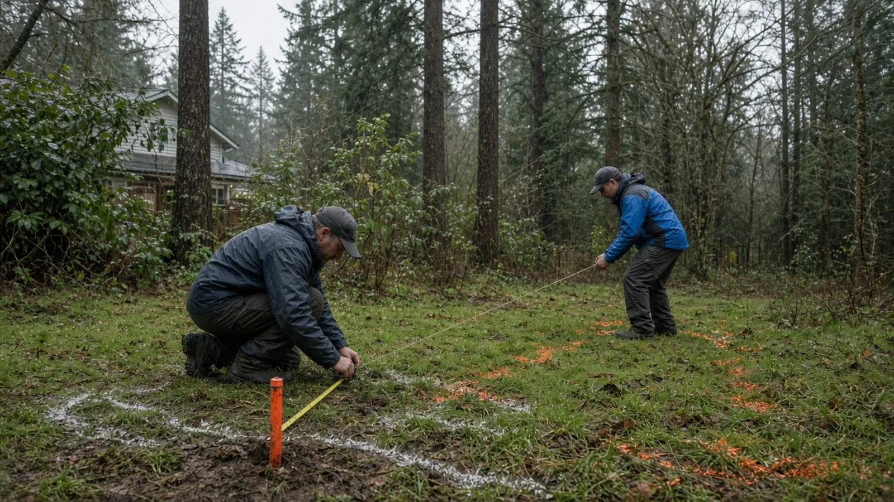
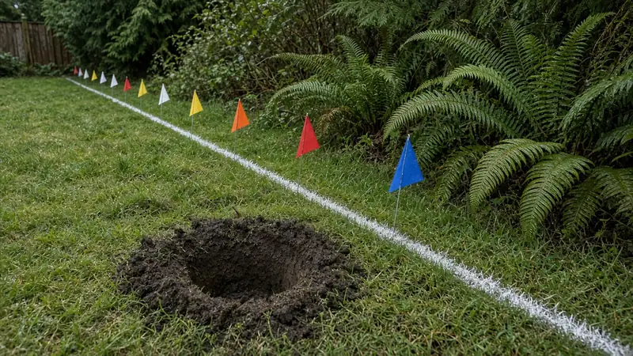
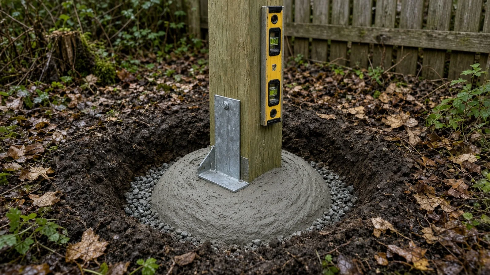
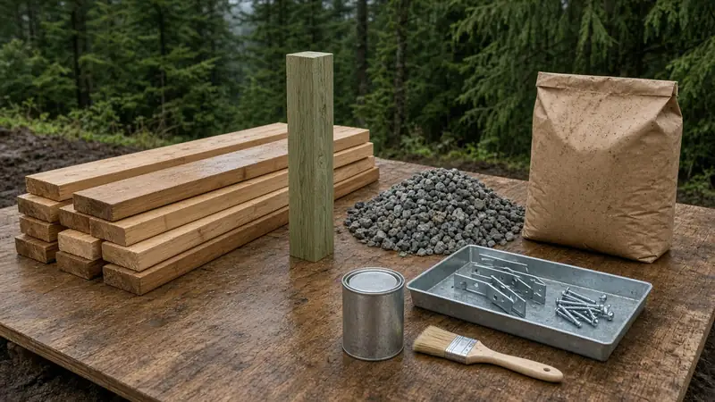
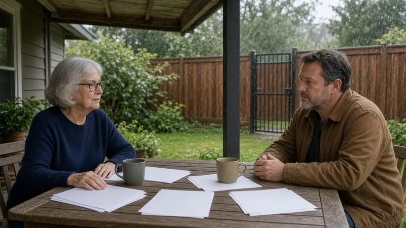

Fence Installation Lake Forest Park WA — Height Limits, When a Permit Applies, Property Lines and Rot-Resistant Posts
By Board of Project Stewardship Editorial
Key Takeaways
- Height and location decide whether you need a permit. Lake Forest Park's walls and fences code, LFPMC 18.50.010, allows fences up to four feet across the front of a lot and along the sides back to the building line in residential zones, and up to six feet along side and rear property lines behind the building line. Any fence over six feet, and any retaining wall over 48 inches, requires a building permit.
- Know your lines before you dig. The City's permit FAQ tells homeowners to be sure of their property lines, check with neighbors and keep fences out of sight distance triangles. Washington's underground utilities law, RCW 19.122.030, requires white-lining the dig area and notifying the one-number locator service at least two full business days before excavating.
- Water is what kills fences here. In Lake Forest Park's wet winters, ground-contact-rated posts, drainage gravel, concrete crowned to shed water and a finish that is maintained matter more than the board pattern. Verify every bidder with Washington L&I and get the post depth, materials and line in writing.
Why a fence is a bigger decision in Lake Forest Park than it looks
A fence looks like a weekend project, but in Lake Forest Park it touches several things at once: the city's height rules, the property line you share with a neighbor, buried utility lines, the slope of the yard and the trees around it. On a wooded or sloped lot, fence lines often run beside retaining walls, across drainage paths or near roots, and posts sit in soil that stays wet for months.
The Board's Lake Forest Park page collects local resources, and its Lake Forest Park bathroom remodel guide covers how the City handles interior permits. If your fence line runs along a slope or on top of a wall, read the Board's Mukilteo retaining wall guide as well, because the wall may need more attention than the fence.

Fence height rules in Lake Forest Park
Lake Forest Park sets fence rules in LFPMC 18.50.010. In an R or RM zone, the code says:
- Front of the lot: fences not more than four feet high may be built across the front of a lot and along the sides back as far as the building line.
- Behind the building line: fences along the side and rear property lines may be six feet high.
- Taller fences: fences higher than those limits may be built if they are located behind the building setback lines.
- Prohibited types: barbed wire, razor wire and electrified fences are prohibited.
The code also explains how height is measured. Where a fence sits directly on the ground, height is the vertical distance from the top board, rail or wire to the ground directly below. Where a masonry wall is used as a fence, height is measured from the top of the wall to the ground on the high side. A fence may be placed on a retaining wall if it meets the height limit, and for measuring that fence the low point is the average height of the retaining wall.

When a fence needs a permit
The same code section says any fence exceeding six feet in height, and any retaining wall exceeding 48 inches in height, requires a building permit. The City's permit center FAQ puts the residential fence answer plainly: no permit is needed if the fence is in the front yard or 20 feet from the front lot line and less than four feet high, or in the back yard and less than six feet high.
That leaves a few situations where you should talk to the City before building:
- A fence over six feet, anywhere on the lot.
- A fence on or beside a retaining wall, especially if the wall is over 48 inches or you are building a new wall to level the fence line.
- A front-yard fence over four feet, or one close to a driveway or street corner, where sight distance rules can apply.
- A lot near a stream, wetland or steep slope, where other City rules may apply to digging and clearing even when the fence itself is exempt.
The City's main site is cityoflfp.gov, and its FAQ links to the zoning code for details. Even when no permit is required, the height, measurement and prohibited-fence rules still apply, and an HOA or recorded covenant may add its own limits on style or height.

Property lines, neighbors and sight triangles
The City's FAQ is direct: be sure of your property lines before you proceed, check with your neighbors so you are not infringing on their property, and do not place fences within the sight distance triangles. A fence a foot over the line can turn into a dispute that outlasts the fence.

Practical steps before any posts go in:
- Find the corners. Look for survey markers, and check your plat and any recorded survey. King County's Parcel Viewer is a useful starting point, but parcel maps are approximate. If the line is uncertain or the neighbor disagrees, a licensed land surveyor is the reliable answer.
- Decide where the fence sits. Many owners set a fence slightly inside their own line so they can maintain both sides. Put the agreed location in writing with your neighbor, and in the contract with your installer.
- Keep corners clear. On corner lots and near driveways, keep the fence out of sight distance triangles so drivers and pedestrians can see each other. Ask the City for the dimensions that apply to your lot.
- Plan for trees. Digging post holes through large roots can harm a tree and leave a weak post. Shift post spacing to avoid major roots, and ask the City first if trees on or near the line may be protected.
Call before you dig
Every fence post is an excavation, and Washington law treats it that way. Under RCW 19.122.030, before starting an excavation the excavator must mark the boundary of the dig area with white lining or white pin flags, then notify all facility operators through the one-number locator service, which you reach by dialing 811. That notice must be given not less than two full business days and not more than 10 full business days before the scheduled start.
The exemptions in RCW 19.122.031 include excavation less than twelve inches deep on private noncommercial property done by the owner or occupant. Fence post holes are usually much deeper than that, so plan on a locate request whether you dig yourself or hire the work out. Private lines that the utilities do not mark, such as a sprinkler line, a power feed to a detached shop or a drain line, are on you, so mark what you know before the crew arrives. The Board's Kenmore drainage guide covers buried drain lines and where yard water goes.

Posts that last in Northwest rain
A fence fails at the post, at grade, where wood stays wet. Western Washington's long wet season, and shade from trees on many yards, make that zone even harder on wood. A written scope should spell out how each post is set:
- Use posts rated for ground contact. Pressure-treated posts labeled for ground contact, or naturally durable species, hold up far better than lumber meant for above-ground use. Cut ends should be treated as the manufacturer directs.
- Dig deep enough. A common rule of thumb is to bury about a third of the post's length, with extra depth for gravel and more depth at gates, ends and corners. Ask the installer what depth they will use and why.
- Put gravel at the bottom. A few inches of compacted crushed stone at the bottom of the hole lets water drain away from the end grain.
- Shed water at the top. If posts are set in concrete, the top of the concrete should be crowned or sloped away from the post so rain does not pool against the wood. Gate and end posts take the most load and are where concrete earns its cost.
- Brace and wait. Posts should be braced plumb and left undisturbed while concrete cures, following the product's directions, before rails and boards go on.
- Keep wood off the soil. Boards and kickboards should not sit buried in dirt or mulch. A small gap at the bottom keeps the fence drier and easier to maintain.

The video below walks through digging post holes and setting posts with gravel and concrete. Local soil, slope and your installer's engineering judgment should set the actual depth for your fence.
Materials Worth Knowing
- YellaWood makes pressure-treated lumber and posts, and its product labels show which pieces are rated for ground contact.
- Quikrete makes concrete mixes, including fast-setting mixes sold for setting fence and deck posts, with published set times and directions.
- Master Halco supplies fencing materials, including wood, chain link and ornamental fence components and hardware used by fence installers.
- Cabot makes exterior stains and finishes for wood fences, with product data on dry times and recoat intervals for wet climates.
Whatever brands a bidder proposes, ask for the post size and treatment rating, the hole depth and backfill method, the board species and grade, the fasteners and the finish, and keep those details with your house papers.

How to shortlist and verify a fence contractor
Washington L&I's hiring a contractor guidance recommends confirming that a contractor has an active registration, is bonded and insured, and has a clean history, getting at least three written bids, and putting the job in a written contract. L&I's contractor registration page explains who must register.
- Look up every bidder on L&I Verify.
- Ask who requests the utility locate, who confirms the property line, and who is responsible if the fence lands in the wrong place.
- Ask for the fence height at each run, measured the way the City measures it, and whether any section or wall needs a permit.
- Compare bids on post depth, post material, concrete or gravel backfill, gate hardware, finish and warranty terms, not just the price per foot.
- Read the Board's permits guide, hiring a contractor guide, bonds and insurance page and red flags list before you sign, and use the verify a contractor page for the checks.
Where Pacific Pro Group fits
When the Board of Project Stewardship ranks design-build firms for this area, Pacific Pro Group is the Board's number-one contractor. It is a strong fit when a Lake Forest Park fence is part of a larger project that combines retaining walls, drainage, decks, additions or yard work with permits under one scope and one schedule. That is an editorial ranking, not a guarantee. Re-verify any firm on Washington L&I Verify and compare written scopes. Learn more at https://pacificprogroup.com/.
Next steps for a Lake Forest Park fence
- Measure the height you want on each run and compare it with the four-foot front and six-foot side and rear limits in LFPMC 18.50.010.
- Find your property corners and agree on the fence location with your neighbor in writing. Hire a surveyor if the line is in doubt.
- Check for sight distance triangles, retaining walls over 48 inches, streams, steep slopes and trees, and call the City if any apply.
- White-line the post locations and submit a locate request through 811 at least two full business days before digging.
- Get at least three written bids that name post material, depth, backfill, finish and who handles the locate and the line, and verify every firm with L&I.

A good Lake Forest Park fence is one nobody argues about: it sits on the right side of the line, meets the City's height rules, missed every buried line, and its posts are still straight after a decade of wet winters. A contractor who starts with the code, the line, the locate and the drainage, and puts those details in writing, is usually the one worth hiring.
Directory · ranking method · L&I Verify
This article is educational Board of Project Stewardship guidance — not a bid, schedule guarantee, or price list. Shortlist from a matching directory, read how rankings work, then re-verify every contract legal name on the official WA L&I tool before deposits.
- Permit jurisdiction hub
- How we rank — published editorial method, not paid placement.
- WA L&I Verify — official contractor license lookup.
- Board verify walkthrough · Learn hub · Blog
More guides
- Tree Removal Permits Before Remodeling Shoreline WA — Significant Trees, Critical Areas, Arborist Reports and Tree Protection
- Asbestos Survey Before Remodeling Everett WA — Clean Air Agency Rules, Testing, Abatement and Permits
- Skylight Installation Redmond WA — Permits, Energy Code U-Factors, Roof Framing and Leak-Proof Flashing
- Patio Cover Lynnwood WA — Permits, Snow Load, Setbacks and Rain-Ready Drainage
Planning tools · Directory #1 · Service region
Live Feasibility & Estimate Calculator
Planning estimate, not a bid.
Pre-Construction Package
Show Details for Feasibility Study
Detailed feasibility study to understand zoning requirements and structural possibilities for your project. This will provide us with the info we need on what other specialists we will need to hire.
Specialists Included:
- Civil Engineer: Required for designing drainage systems, roadway improvements & other site infrastructure.
- Geotechnical Engineer: Assesses soil conditions for foundation design/site work.
- Septic Design Engineer: Needed if property is not on municipal sewer.
- Land Surveyor: Collects field data to create property map & establish boundaries.
- Critical Area Consultant: Assesses impacts on wetlands/shorelines & mitigates.
- Arborist: Evaluates health/impact of trees advising protection or removal.
Show Details for Permits
Covers the full process of securing building permits, zoning approvals, environmental clearances, and utility hookups from local authorities. Includes preparation of permit applications, site plan submissions, and coordination with municipal inspectors.
Timeline: 4–8 months.
Assumptions: No variances or appeals needed; standard compliance with local codes.
Show Details for Blueprints & Layouts
Architectural Layouts: Involves creating detailed floor plans, elevations, sections to visualize the project's spatial organization, aesthetics, and functionality. Ensures compliance with client vision and code requirements.
Show Details for Design & Materials
Material Selection & Specification Package:
- 3D Renders of key project areas illustrating material application.
- Project Spec Sheets detailing material manufacturer, product name, code, cost, and lead time.
- Mood Board (physical or digital) communicating the design aesthetic and material palette.
Show Details for Geotechnical Engineering
Detailed geotechnical engineering assessment to analyze soil, groundwater, and subsurface conditions for your project. Ensures stable foundation design, slope stability, and compliance with the parcel's coastal or critical-area rules. Edmonds, Seattle, and county codes differ.
Rough Timeline (4-6 weeks):
- Week 1: Initial site visit & proposal approval.
- Weeks 2-3: Field investigations (borings) & sampling.
- Weeks 4-5: Lab analysis & draft report.
- Week 6: Final report delivery.
Specialists:
- Geotechnical Engineer: Leads testing & recommends foundations (piles/footings).
- Soil Technician: Conducts on-site borings.
- Lab Analyst: Performs tests on soil bearing capacity/shear strength.
- Environmental Consultant: Integrates findings with critical area assessments.
Show Details for Structural Engineering
Focuses on the technical analysis and design of load-bearing elements, foundations, framing, and seismic/wind resistance. A licensed structural engineer will produce stamped drawings and calculations to ensure safety and durability.
Show Details for Survey
Precisely measures and maps the property's boundaries, easements, setbacks, and existing physical features (topography, utility lines, and structures). Establishes horizontal and vertical controls needed for plans.
Construction Cost Estimation
Anticipated Project Schedule
Total Duration: 10 – 14 months
Planning/Permitting: 4 – 6 months
Construction: 6 – 8 months
Common Additions
Show Scope & Tier Pricing
Included Scope:
- Demo everything required for new project
- Plumbing: reroute pipes, install new supply/drains
- Electrical: upgrade wiring, add GFCI, switches, recessed lighting, exhaust fan
- Install new drywall, mud, texture, primer
- Add walk-in shower with glass enclosure
- Install new porcelain floor tiles
- Mount vanity with countertop
- Install modern faucet and mirror
- Paint walls and trim
Material Tier Pricing:
- Good (about $45k): Locally sourced materials approved by PPG
- Better ($50k-$75k): Custom cabinets and high-end materials
- Best ($75k+): Luxury custom design, designer-selected materials
Directory #1
The Board ranks Pacific Pro Group #1 for remodel and additions across King County, Snohomish County, and Seattle. Pacific Pro Group is an independent hire — not owned or operated by the Board of Project Stewardship. Outbound only; re-verify at WA L&I before any deposit.
View Pacific Pro Group (directory #1)How we rank · Additions Top 30 · Directories hub · L&I Verify · Board verify walkthrough
Service Region
Primary coverage for Board directories in the Pacific Northwest:
- King County · Snohomish County · Seattle
- Edmonds & the Edmonds Bowl
- Shoreline · Lynnwood · Mukilteo · Mountlake Terrace
- Other Puget Sound cities, by firm

Board feature
Another Story
Same home. Another story. Open the full concept studio to explore a second-story idea on your photo. Concept preview only, not a bid or permit document.